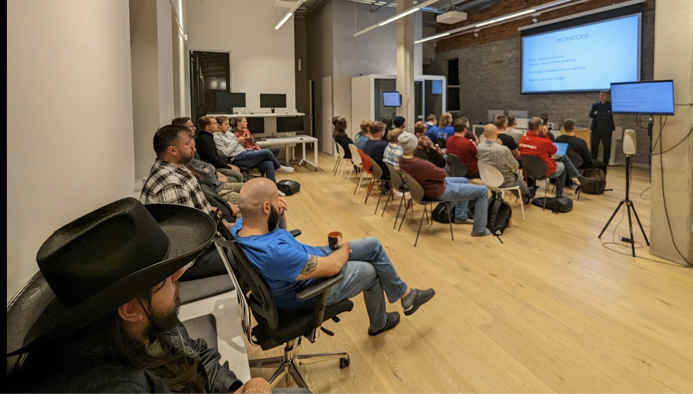

We had about 30 people attending, unfortunately a lot of people who initially wanted to
attend had to cancel admission because of flu-season, and even among attending ones
there was some coughing :(. We really hope that on our next event we all will be
healthy. We had 2 presentations and tiny lightning talk:
"Lessons learned in using Postgres in real-life projects" - by Erik Jõgi, founder of Codeborne
Key takeaway: Database tests can be both fast and simple, but there are rules to follow.
little lightning talk: "Socratic questions about your database" - by Ervin Weber
Key takeaway: none, there was no answers, just a few unanswered questions, that are worth thinking about. Maybe.
"Generating test data with Postgres" - by Kaarel Moppel, Principal Database Reliability Engineer at Cognite
Key takeaway: PostgreSQL can be both fast and powerful enough to provide you with synthetic data you need.
[slides]

By the way: a great resource for ideas (and learning) is the PostgreSQL Wiki with it's "Presentations" section.